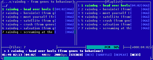

MOC - music on console
Dieser Artikel wurde für die folgenden Ubuntu-Versionen getestet:
Ubuntu 16.04 Xenial Xerus
Zum Verständnis dieses Artikels sind folgende Seiten hilfreich:
 MOC - music on console
MOC - music on console  ist ein leicht zu bedienender Audioplayer mit einer Client-Server-Struktur für die Konsole, der viele Formate (z.B. MP3, Ogg Vorbis, FLAC, Musepack, WAV und Speex) unterstützt. Es lassen sich einfach Lieder aus einem Ordner abspielen, die Erstellung und das Speichern von Wiedergabelisten ist aber auch möglich.
ist ein leicht zu bedienender Audioplayer mit einer Client-Server-Struktur für die Konsole, der viele Formate (z.B. MP3, Ogg Vorbis, FLAC, Musepack, WAV und Speex) unterstützt. Es lassen sich einfach Lieder aus einem Ordner abspielen, die Erstellung und das Speichern von Wiedergabelisten ist aber auch möglich.
Das Programm eignet sich besonders gut, falls man keine grafische Oberfläche zur Verfügung hat oder auf älteren Systemen ressourcensparend Musik hören möchte. MOC unterstützt außerdem das Abspielen von Internetradiostationen sowohl durch Eingabe einer direkten Adresse für den Stream als auch durch (M3U-)Playlisten, welche die Adressen beinhalten. Zudem unterstützt es eine lückenlose Wiedergabe (Gapless Playback).
Installation¶
 MOC kann aus den offiziellen Paketquellen über das folgende Paket installiert werden [1]:
moc (universe)
 mit apturl
mit apturl
Paketliste zum Kopieren:
sudo apt-get install moc
sudo aptitude install moc
Bedienung des Clients¶
Mit dem Befehl [2]:
mocp
startet man den Client und gleichzeitig den Server, falls letzterer noch nicht läuft.
Wiedergabe¶
Da es sich bei MOC um ein Kommandozeilenprogramm handelt, wird es vollständig mit der Tastatur bedient. Die wichtigsten Tastenkürzel für die Wiedergabe von Audiodateien sind:
| Taste/n | Aktion | Taste/n | Aktion |
| ↑ und ↓ | Navigation | S | Stop |
| ⏎ | Ordner betreten / Titel auswählen | < und ⇧ + < | Lautstärke -/+ 1% |
| oder P | Play / Pause | , und . | Lautstärke -/+ 5% |
| ← und → | Spulen | [ und ] ( Alt Gr + 8 und Alt Gr + 9 ) | leises und schnelles Spulen |
| B und N | Ein Lied zurück/vor | ⇧ + S | Shuffle an/aus |
| ⇧ + R | Repeat an/aus |
Wiedergabelisten¶
MOC erlaubt das Erstellen und Speichern von Wiedergabelisten. Mit A kann man ganz einfach Dateien und mit ⇧ + A ganze Verzeichnisse an die aktuelle Wiedergabeliste anhängen. Mit L kommt man zur Ansicht der Wiedergabeliste und wieder zurück. Mit ⇧ + V kann man die aktuelle Liste speichern. Als Speicherort werden sowohl absolute Pfade (z.B. /home/BENUTZERNAME/Musik/favoriten.m3u) als auch relative Pfade vom aktuellen Verzeichnis ausgehend (z.B. ../../Musik/favoriten.m3u) angenommen. Eine Übersicht über die wichtigsten Tastenkürzel im Umgang mit Wiedergabelisten:
| Taste/n | Aktion | Taste/n | Aktion |
| Tab ⇆ | Wechsel zwischen Wiedergabe- und Dateiliste | D | Titel aus der Wiedergabeliste entfernen |
| A | Datei zur Wiedergabeliste hinzufügen | ⇧ + V | Wiedergabeliste speichern |
| ⇧ + A | Verzeichnis rekursiv zur Wiedergabeliste hinzufügen | ⇧ + C | Wiedergabeliste leeren |
Hinweis:
Wenn man eine Wiedergabeliste öffnen möchte, die als Datei vorliegt, muss die aktuelle Wiedergabeliste vorher mit ⇧ + C geleert werden.
Weitere Tastenkürzel¶
| Taste/n | Aktion | Taste/n | Aktion |
| Q | MOC-Client beenden | I | In ein bestimmtes Verzeichnis wechseln |
| ⇧ + Q | MOC-Client und -Server beenden | ⇧ + N | Automatisch nächsten Titel spielen an/aus |
| M | In das Musikverzeichnis wechseln (siehe Konfiguration) | R | Ordnerinhalt aktualisieren |
| G | Im aktuellen Verzeichnis suchen | Strg + R | Anzeige aktualisieren |
| ⇧ + G | In das Verzeichnis mit dem zur Zeit gespielten Lied wechseln | Strg + T | Songdauer ein-/ausblenden |
| H | Übersicht über alle Tastenkürzel | Strg + F | Dateiformat ein-/ausblenden |
Weitere Konfigurationen¶
Damit weitere Konfigurationen von MOC überhaupt möglich sind, braucht man die Konfigurationsdatei ~/.moc/config. Falls diese noch nicht existiert, wie es nach der Installation der Fall ist, kann mit:
mkdir ~/.moc cd ~/.moc && cp /usr/share/doc/moc/examples/config.example.gz ./ && gunzip config.example.gz && mv config.example config
eine gut kommentierte Standard-Konfigurationsdatei erstellt werden. Mit der selben Befehlskette können die ursprünglichen Einstellungen jederzeit komplett zurückgesetzt werden. Dieser Artikel bezieht sich an dieser Stelle nur auf die wichtigsten Optionen. Schon mit geringen Englischkenntnissen können andere Einstellungen, dank der guten Kommentierung, aber leicht gemacht werden. Um Standardeinstellungen zu ändern müssen in der ~/.moc/config die entsprechenden Einträge aktiviert werden in dem man die # Raute vor dem Eintrag entfernt.
Tastenkürzel ändern / keymap-Datei¶
Unter einer keymap-Datei versteht man in der Regel eine Textdatei, in der Tastenkürzel für ein bestimmtes Programm festgelegt werden. Für die Möglichkeit die Tastenkürzel in MOC zu ändern muss eine solche keymap-Datei vorhanden und in der Konfigurationsdatei ~/.moc/config bestimmt sein. Eine Vorlage der keymap-Datei ist bereits als /usr/share/doc/moc/examples/keymap.example vorhanden, sollte aber noch umbenannt und in das für den Benutzer beschreibbare moc-Verzeichnis, also ~/.moc/, kopiert werden. Das kann z.B. mit dem Befehl:
cd ~/.moc && cp /usr/share/doc/moc/examples/keymap.example.gz ./ && gunzip keymap.example.gz && mv keymap.example keymap
erreicht werden. Danach muss mit der Option Keymap in der Datei ~/.moc/config die soeben erstellte Datei mit einem Editor[3] als Keymap-Datei eingetragen werden und die Raute #zum Aktivieren entfernt werden. In diesem Fall wäre es dann:
Keymap = keymap
Das hinzufügen von Multimedia Tasten wie z.B. XF86AudioPlay oder XF86AudioForward ist nicht vorgesehen oder eine Lösung ist zu diesem Zeitpunkt nicht Bekannt.
Repeat- und Shufflefunktion¶
Die beiden Zeilen:
Repeat = no
und
Shuffle = no
entscheiden, ob die Wiederholungs- bzw. Shuffle-Funktion beim Start von MOC aktiviert sind. Standardeinstellung ist no.
Musikverzeichnis¶
Um beim Start des MOC-Clients immer den Inhalt des selben Verzeichnisses angezeigt zu bekommen, muss in der Zeile
MusicDir = "/home/joe/music"
die
# Raute entfernt und der Pfad zum entsprechenden Verzeichnis (i.d.R. /home/BENUTZERNAME/Musik/) eingetragen werden. Anschließend wird noch der Wert für StartInMusicDir in der Datei ~/.moc/config auf yes gesetzt, was danach so aussehen sollte:
StartInMusicDir = yes
Schnellzugriffe¶
Mit MOC ist möglich per Tastendruck in ein bestimmtes Verzeichnis zu wechseln. Diese Verzeichnisse werden durch die Fastdir-Optionen in ~/.moc/config eingestellt. Das Ganze sieht z.B. so aus:
Fastdir1 = /home/BENUTZERNAME/Musik/mp3/rock
Da die Tastenkürzel für die Schnellzugriffe mit dem deutschen Tastaturlayout eher umständlich handzuhaben sind, ist es ratsam, diese noch in der keymap-Datei (siehe oben) abzuändern.
Steuerung per Kommandozeile¶
Sobald MOC läuft, kann das Frontend mit der Taste Q beendet werden, wobei der MOC-Server weiterhin die Musik abspielt. Nun kann der MOC-Server per Komandozeile gesteuert werden:
mocp --play mocp --stop mocp --next mocp --toggle-pause mocp --volume +5 ...
Weitere Befehle bekommt man per mocp --help. Diese Befehle lassen sich nun einfach in anderen Scripten verwenden. Es bietet sich z.B. an, diese Befehle für die lirc Fernsteuerung zu nutzen.
Externe Befehle ausführen¶
Hinweis:
Tastaturkürzel können ggf. durch die Terminal-Emulation schon belegt sein. In diesem Fall müssen die Tastenkürzel des Terminals angepasst werden oder belegte Tasten stehen nicht für MOC zur Verfügung.
Eine weitere Möglichkeit von MOC ist es, vorher festgelegte Konsolenbefehle über Tastenkürzel zu starten. Ihre maximale Anzahl beträgt 10 und sie werden mit den Tasten F1 - F10 gestartet. Dazu müssen entsprechende Zeilen in folgender Form der Konfigurationsdatei mit einem Editor hinzugefügt werden:
ExecCommand3 = "cp %f ~/"
Die Ziffer hinter ExecCommand gibt dessen Nummer von 1 bis 10 an und in Anführungszeichen folgt der auszuführende Befehl. Wie im obigen Beispiel stehen für diese externen Befehle auch Variablen zur Verfügung. Die Variable "%f" steht für den Pfad des aktuellen Musikstücks. Somit wird in diesem Beispiel durch Drücken von
F3 der aktuelle Titel in das Homeverzeichnis des Benutzers kopiert.
Themes¶
MOC bietet die Möglichkeit, mit sogenannten Themes das Farbschema des Clients zu verändern. Standardmäßig werden schon einige Themes bei der Installation mitgebracht. Mit dem Befehl:
ls /usr/share/moc/themes/
erhält man einen Überblick über die systemweit installierten MOC-Themes. Das verwendete Theme muss vor dem Start des Clients mit:
mocp -T NAME_DES_THEMES
definiert werden. Bei diesem Befehl muss wie bei Linux üblich auf die Groß- und Kleinschreibung unbedingt geachtet werden. Die Tastenkombination
⇧ +
T führt in das Theme-Menü, in dem alle verfügbaren Themes aufgelistet sind und das aktuelle einfach gewechselt werden kann. Diese Einstellung ist jedoch beim nächsten Start des Clients nicht mehr gültig. Standardmäßig wird das Theme /usr/share/moc/themes/example_theme geladen. Natürlich können zusätzlich noch weitere Themes selbst erstellt oder z.B bei moc.daper.net heruntergeladen werden.
Wenn man ein Theme für MOC selbst erstellen möchte, hält man sich am besten an ein schon existierendes Theme und ändert in einer Kopie die entsprechenden Farben mit einem Editor ab. Um ein Theme zu installieren wird die entsprechende Datei für eine Benutzerinstallation einfach nach ~/.moc/themes/ und für eine systemweite Installation mit Root-Rechten [5] nach /usr/share/moc/themes/ kopiert:
cp /PFAD/ZUM/Theme ~/.moc/themes/
bzw.
sudo cp /Pfad/zum/Theme /usr/share/moc/themes/
wobei ~/.moc/themes eventuell erst mit:
mkdir -p ~/.moc/themes
erstellt werden muss. Um ein Theme standardmäßig zu aktivieren, muss die Zeile:
Theme = example_theme
editiert werden und rechts der Name des entsprechenden Themes eingetragen werden. Auch hier ist wieder die Groß- und Kleinschreibung zu beachten.
Benachrichtigungsdienst (D-BUS)¶
Die einfachste Methode, bei jedem neuen Lied eine kurze Info über den Künstler und den Titel durch den Benachrichtigungsdienst zu erhalten, ist diesen Eintrag in ~/.moc/config zu aktivieren:
OnSongChange = "/usr/bin/notify-send %a %t"
Dazu muss man noch das Paket:
libnotify-bin (universe)
mit apturl
Paketliste zum Kopieren:
sudo apt-get install libnotify-bin
sudo aptitude install libnotify-bin
installieren.
MOC-Notifier¶
MOC-Notifier ist ein kleines Python-Programm zum Anzeigen des aktuell durch MOC wiedergegebenen Titels im Benachrichtigungsdienst. Es dient somit als Alternative zur oben beschriebenen Methode mit libnotify-bin.
Installation¶
Als erstes lädt man sich den MOC-Notifier mocn.py  herunter. Anschließend kopiert man die Datei mocn.py in das Verzeichnis ~/.moc/. Als nächstes muss diese ausführbar gemacht werden. Zum Schluss muss die Datei ~/.moc/config wie folgt in einem Editor [3] angepasst werden:
herunter. Anschließend kopiert man die Datei mocn.py in das Verzeichnis ~/.moc/. Als nächstes muss diese ausführbar gemacht werden. Zum Schluss muss die Datei ~/.moc/config wie folgt in einem Editor [3] angepasst werden:
OnSongChange="/home/BENUTZERNAME/.moc/mocn.py %a %r %f %t %n %d %D"
~/.moc/ oder $HOME/.moc/ funktionieren dabei leider nicht. Sollte die Datei config noch nicht existieren, so muss man die Datei neu anlegen.
Deinstallieren¶
Um den MOC-Notifier zu deinstallieren, reicht es, die Datei mocn.py im Ordner ~/.moc/ zu löschen und die Datei config im selben Ordner in einem Editor zu bearbeiten:
OnSongChange=""
Anzeige eines Cover¶
Grundsätzlich ist die Darstellung von Covern innerhalb des Terminals mit MOC nicht vorgesehen da es als reine Terminalanwendung dieses nicht benötigt. Wer MOC als Ressourcenschonenden Musikplayer einsetzen möchte wird diese Funktion vielleicht trotzdem vermissen. An dieser Stelle wird auf den Wikiartikel Covergloobus und dem Link am Ende dieses Artikels „Audio & Coveranzeige mit Conky" verwiesen.

 Übersichtsartikel
Übersichtsartikel- Erstellt mit Inyoka
-
 2004 – 2017 ubuntuusers.de • Einige Rechte vorbehalten
2004 – 2017 ubuntuusers.de • Einige Rechte vorbehalten
Lizenz • Kontakt • Datenschutz • Impressum • Serverstatus -
Serverhousing gespendet von